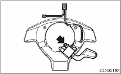

WARNING:
Before servicing, be sure to read the notes in the “AB” section for proper handling of the driver’s airbag module. 
1. Set the front wheels in straight ahead position.
2. Turn the ignition switch to OFF.
3. Disconnect the ground cable from battery and wait for at least 20 seconds before starting work.
4. Using TORX® BIT T30 (1), loosen the two TORX® bolts which secure driver’s airbag module.

5. Disconnect the airbag module connector on back of the airbag module.
6. Remove the steering wheel.
7. Remove the four screws to remove the lower cover from steering wheel.
8. Remove one screw to remove the cruise control command switch from lower cover.
